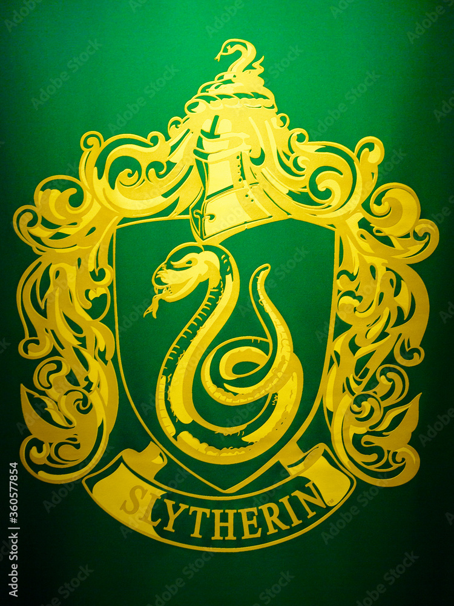

La Casa Slytherin cuenta con miembros ambiciosos, inteligentes, muy astutos y que tienden a ser líderes fuertes. Aunque también son unos supervivientes, lo que les hace pensar antes de actuar, pese a tener un claro desprecio por las reglas.
Slytherin
Severus, ¿Después de tanto tiempo?
- Siempre
- Severus Snape

Salazar Slytherin
Fue un famoso mago de sangre pura de la Edad Media. Hablaba la lengua pársel y era extremadamente hábil en el
uso de la Legeremancia.
No confiaba en los mestizos debido a la persecución de muggles contra magos, esto provocó que él
deseara que Hogwarts sólo enseñara a aquellos de sangre pura. Como los otros tres fundadores no lo aceptaron
abandonó el colegio, no sin antes construir la Cámara de los Secretos con el basilisco en su
interior.
Según el Sombrero Seleccionador, Slytherin viene del pantano, hábitat de toda clase de reptiles como las
serpientes,
lo que puede explicar su raro don de la lengua pársel.
Al igual que Rowena Ravenclaw y Godric Gryffindor, fue muy selecto a la hora de escoger a los miembros de
su Casa.
Seleccionaba sus estudiantes de acuerdo a sus habilidades, ambición y status de sangre, así como la capacidad
de hablar pársel. Su Casa en Hogwarts se simboliza con una serpiente y los colores esmeralda y plateado.
Después de la fundación de Hogwarts y tras haber convivido por muchos años, surgió una disputa entre él y
los
otros fundadores. El motivo de la discusión fue que Salazar solo quería admitir a los estudiantes de familias
de magos y excluir a los de familia muggle. De acuerdo a la antigua leyenda, construyó una cámara oculta
debajo del colegio antes de partir para que no fuera olvidado. Específicamente fue creada con el objetivo de
limpiar al colegio de los magos impuros o de "sangre sucia". La Cámara era refugio de un Basilisco, el cual
solo podia ser controlado por su "verdadero amo", un heredero directo de Slytherin.
Es un antepasado de Tom Sorvolo Ryddle, que luego se convirtió en Lord Voldemort, uno de los magos
oscuros
más conocidos y temidos de todos los tiempos.
Curiosidades
Sala común
Santo y seña conocidos:La única contraseña conocida de Slytherin es
"sangre pura", utilizada en 1992.
La sala común de Slytherin está en las mazmorras del Castillo de Hogwarts y debajo del Lago Negro. Debido
a esto, la luz en la sala común es verde. Para entrar a la sala
común de Slytherin uno debe simplemente decir en voz alta la contraseña actual frente a un tramo de muro de
piedra húmeda; una vez pronunciada la palabra, una puerta de piedra oculta se deslizará dejando un agujero
rectangular en la pared que conduce a la sala común de Slytherin.
Tras la pared de piedra se encuentra la sala común y las habitaciones, iluminadas por lámparas de techo de
color verde con sillones de cuero negro, sillas y mesas de madera tallada cubiertas de elaborados manteles. La
sala se extiende parcialmente bajo el Lago Negro, lo que le da a la sala una luz verdosa. Tiene un buen
ambiente pero también es bastante frío. La contraseña para acceder a la sala común se cambia cada dos semanas,
y se publica en el tablón de anuncios. Está decorada con tapices que ilustran las aventuras de Slytherins
medievales famosos.

Guardapelo de Salazar Slytherin
El guardapelo fue una creación de Salazar Slytherin. Cuando lo creó lo encantó de modo
que solo un hablante de pársel, como él, pudiera abrirlo. Al dejar Hogwarts
Slytherin llevo el guardapelo con él.
Después de la muerte de Slytherin, el guardapelo pasó de generación en generación, y finalmente llegó a
Sorvolo Gaunt, que vivía fuera de la aldea de Pequeño Hangleton.
Después de que Sorvolo y Morfin fueron encarcelados en Azkaban por agredir a funcionarios tanto Muggles como
del Ministerio británico de Magia, Mérope (su hija) escapó de los horrores de su hogar de la infancia y huyó
a Londres
con Tom Ryddle Sr.
Después de haberse fugado, quedó embarazada. Durante su embarazo, Mérope
dejó de darle filtros de amor a Ryddle con la esperanza de que él eligiera libremente quedarse
con ella . Sin embargo, después de recuperarse, Ryddle regresó a Pequeño Hangleton. Desesperada por el
dinero, Mérope vendió su única posesión
valiosa, el guardapelo, a Caractacus Burke por solo diez galeones. No mucho después, en la víspera de Año
Nuevo
1926, ella fue a un orfanato muggle y dio a luz a su hijo, Tom Sorvolo Ryiddle, nombrándolo como de su
padre y esposo. Merope Gaunt murió poco después, dejando a su hijo al cuidado del orfanato.
El guardapelo fue uno de los horrocruxes de Voldemort, éste se lo robo a Hepzibah Smith junto con la
Copa de Hufflepuff. Fue destruido por Ron Weasley con la Espada de Gryffindor
Magos famosos
- Tom Ryddle (Lord Voldemort)
- Familia Malfoy (mortífagos)
- Familia Black (excepto Sirius)
- Severus Snape (antes mortífago)
- Familia Goyle (mortífagos)
- Bellatrix Lestrange (mortífago)
- Familia Crabbe (mortífagos)
- Horace Slughorn
- Dolores Umbridge
- Merlin
- *Fue la casa que mas mortífagos brindó

Barón Sanguinario, fantasma de la casa de Slytherin.